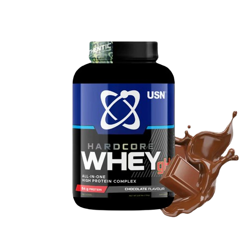
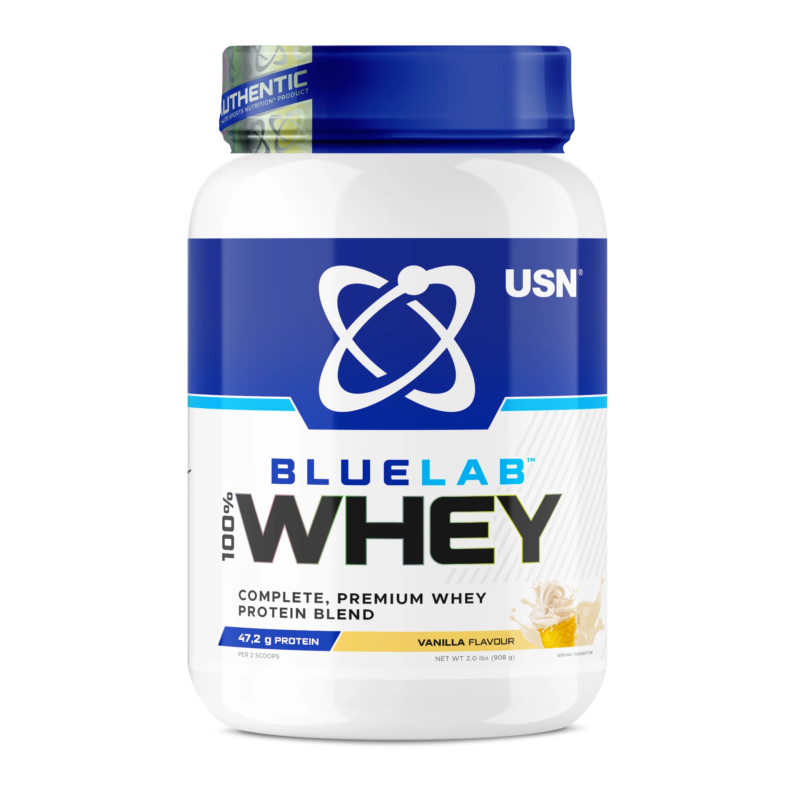
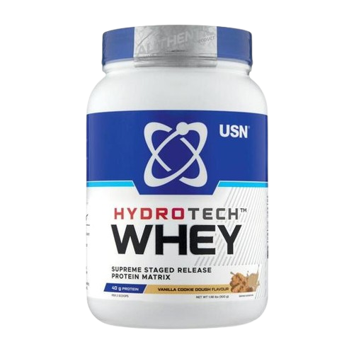
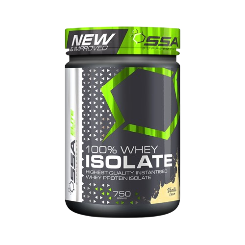
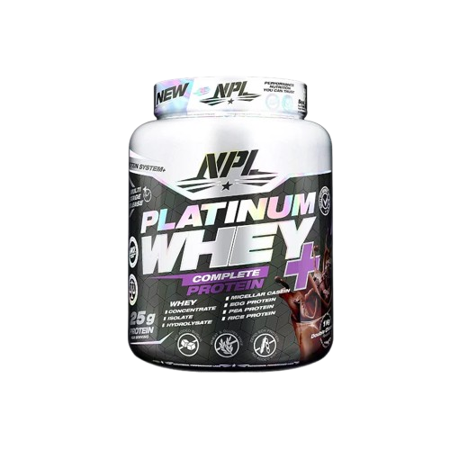

É um suplemento alimentar em pó à base de proteína de soro de leite (whey) combinado com outros ingredientes que podem ajudar no treino, recuperação e ganho de massa muscular.
Este produto foi criado principalmente para quem treina forte e quer:
2300,00MT
É um suplemento alimentar em pó à base de proteína de soro de leite (whey) combinado com outros ingredientes que podem ajudar no treino, recuperação e ganho de massa muscular.
Este produto foi criado principalmente para quem treina forte e quer:
Uso comum recomendado pelo fabricante:
Melhor momento:

É um suplemento de proteína em pó à base de proteína do soro de leite (whey), feito para fornecer proteína de alta qualidade ao corpo — ideal para quem faz musculação e exercícios intensos. Ele combina diferentes tipos de whey (isolado, hidrolisado e concentrado), que são formas de proteína que o corpo usa para recuperar e construir músculos.
3000,00MT
É um suplemento de proteína em pó à base de proteína do soro de leite (whey), feito para fornecer proteína de alta qualidade ao corpo — ideal para quem faz musculação e exercícios intensos. Ele combina diferentes tipos de whey (isolado, hidrolisado e concentrado), que são formas de proteína que o corpo usa para recuperar e construir músculos.
Geralmente, a recomendação do fabricante é:

É um suplemento proteico em pó criado especialmente para quem faz treino de musculação ou exercícios intensos. Ele combina proteínas de soro de leite com outras formas para ajudar seu corpo a recuperar e construir músculo depois da atividade física.
Serve para:
2100,00MT
É um suplemento proteico em pó criado especialmente para quem faz treino de musculação ou exercícios intensos. Ele combina proteínas de soro de leite com outras formas para ajudar seu corpo a recuperar e construir músculo depois da atividade física.
Serve para:
Composição típica:

É um suplemento de proteína à base de isolado de soro de leite (whey isolate) — que passa por um processo de filtragem que tira grande parte de gordura, lactose e carboidratos e aumenta a concentração de proteína de alta qualidade.
Serve para:
3200,00MT
É um suplemento hipercalórico (mass gainer), e o principal objetivo dele é ajudar pessoas a ganhar peso e massa muscular de forma mais rápida e prática.
Serve para:
Composição Típica:

É um suplemento de proteína em pó composto por um mix (“blend”) de diferentes tipos de proteínas de alta qualidade, que são liberadas ao longo do tempo para fornecer aminoácidos continuamente ao corpo.
Serve para:
2500,00MT
É um suplemento de proteína em pó composto por um mix (“blend”) de diferentes tipos de proteínas de alta qualidade, que são liberadas ao longo do tempo para fornecer aminoácidos continuamente ao corpo.
Serve para:
Cada porção (~40 g) normalmente contém aproximadamente: